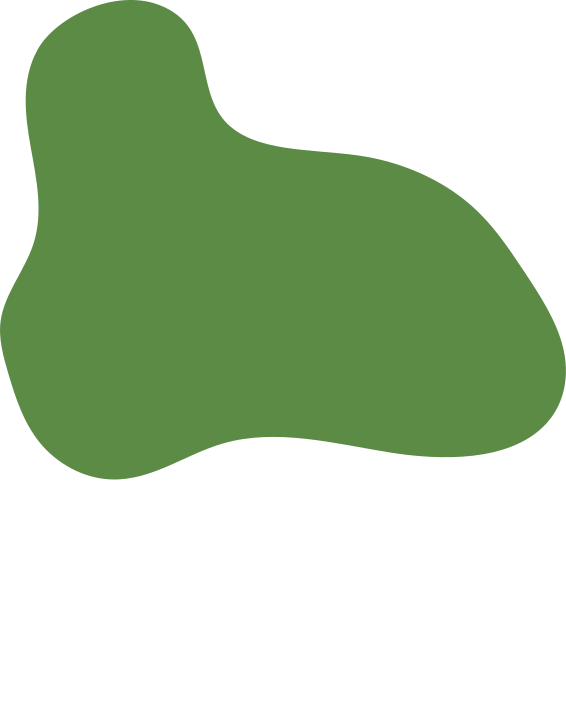
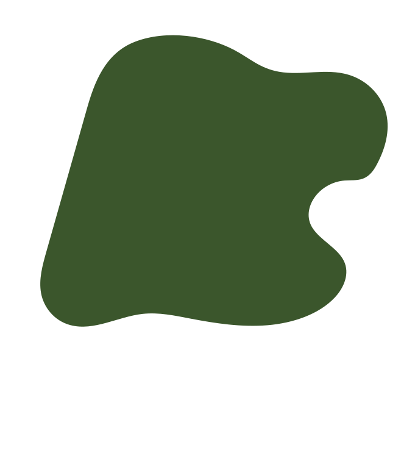
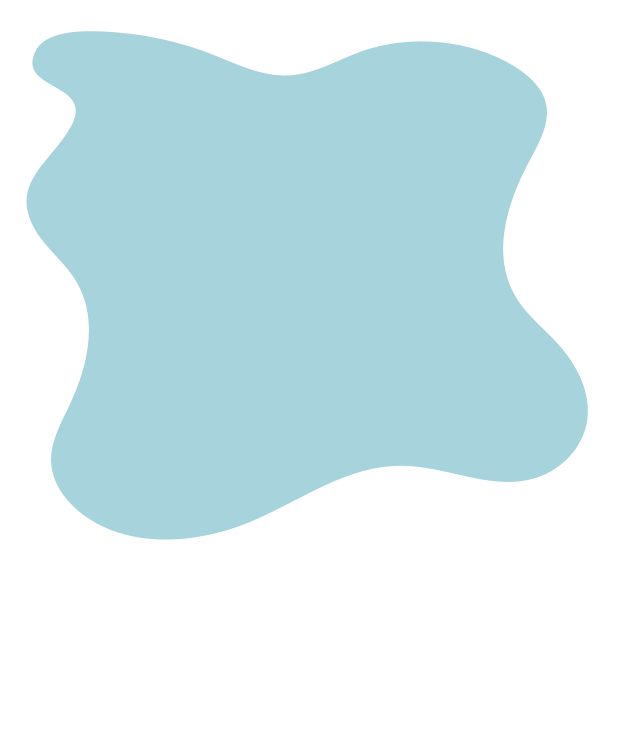
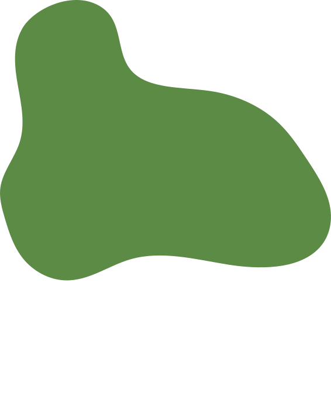
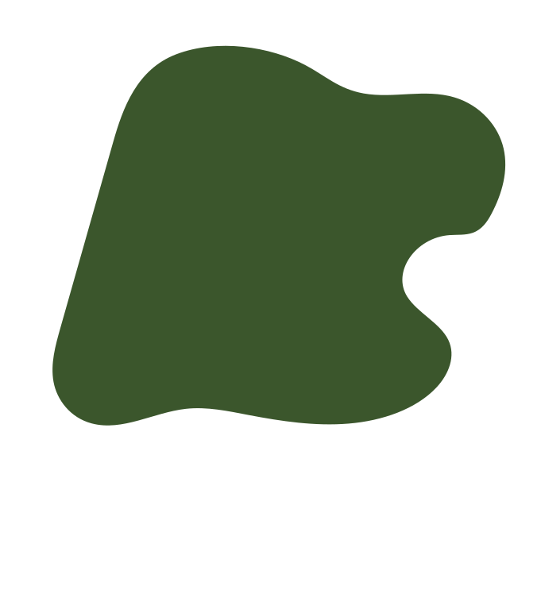
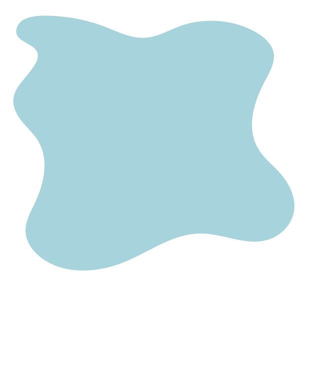

Skitser
Mine første skitser afspejler ret godt det jeg endte ud med. Dog var det svært at tegne så detaljeret at jeg kunne overføre det direkte til illustrator og det endte med at give mig en smule problemer senere hen.
Se mereStilart
Jeg ville gerne prøve at lave noget med en bred farvepalette og gerne i flatdesign. I min stil-inspiration bliver der brugt solide farver med få gradueringer. Dog er farvepaletten en vigtig del i det at skabe perspektiv og kurver. Det var især noget jeg forsøgte at arbejde en del med.
Se mere
Diagrammer
Som afspejlet i mine diagrammer går mit spil ud på at gribe appelsiner for at kunne lave juice. Det var lidt svært at holde sit aktivitetsdiagram og state-machine diagram up to date da alt gik så hurtigt og nye ideer og både Javascript og CSS-animationer var relativt nye.
Se mere
Udvikling
Der er en kæmpe forskel i mit design fra start til slut. Jeg brugte mørke støvede farver og en del kantede fonte til knapper og skrift og former som jeg synes endte med slet ikke at ligne det spil jeg havde tænkt mig. For at rette op på det gik jeg ind og fandt en blødere display-font og brugte mere skrigende farver der gav mit spil det perfekte udtryk
Se mereFarvepalette
Til denne opgave var farverne mine primære byggesten for resten af designet.
 







Projekt
Mit spil og mit spil-site fik en rigtig god rød tråd. Jeg synes jeg endte med at bruge noget simpel vector-grafik med nogle livlige farver der udstråler det som spil repræsenterer for mig. Ikke mindst fik jeg brugt en masse ny teori både i selve kodningen men også i design-processen af både spil-elementer, baggrundsskærm, karakterdesign og UI-elementerne.
Se projektet online
Kort om CSS Animation
Med CSS kan vi meget mere end bare at style. Vi kan animere vores elementer. Med hjælp fra CSS Animation kan vi benytte keyframes og tags til graduerer indhold fra et stadie til et andet. Ofte er det Javascript man tænker på når man hører animation, men med dette værktøj kan man gøre det helt uden.
Kort om JavaScript
Hvor CSS er layout-sprog og HTML er struktur-sprog kan man sige at Javascript er et dynamisk sprog. Det bruges bla. til at skabe interaktive hjemmesider med fx pop-op animationer eller udregnere, men kan især også bruges når man skal programmerer apps eller spil.